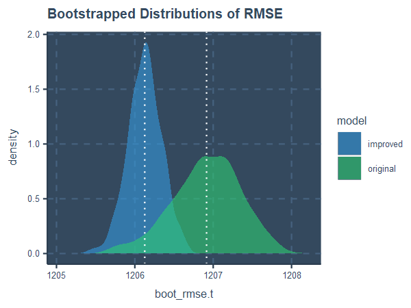
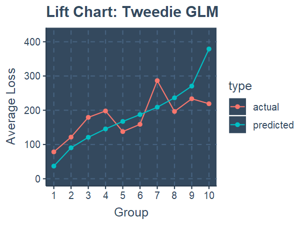
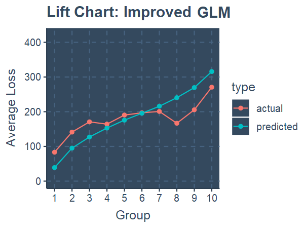

Insurers want to charge policyholders based on their level of risk. This is done by segmenting
the policyholders based on characteristics, called rating factors, which are predictors of their claims.
I performed this process on the ausprivauto0405
dataset. It contains data from 67,856 compulsory third party motor insurance policies taken out in New South Wales, in the years 2004-2005.
Initial Steps
Preparing the data:
Loss Cost was calculated as Total Claim Amount / Exposure.
Ideally, all of the predictors should be categorical variables, so we can split the policyholders into a limited number of classes.
However, the VehValue variable is a numeric variable, so it was binned into 4 groups using
exposure-weighted quartiles.
The VehBody variable contains very sparse categories ('Roadster', 'Bus', 'Convertible' and 'Motorised Caravan')
with few entries, which can cause performance and stability issues in many models. Since they represent only 0.41% of all exposures, these categories were dropped.
Firstly, we can see the histogram of the Loss Cost. As typical, it has a right-skewed distribution, with
most of the sizes concentrated in the smaller amounts. However, there is a spike of zero claims (93.2%), which may neccessitate
a Tweedie model to account for this.
Secondly, using Cramer's V as a metric,
we check for any dependence between the variables, as highly correlated predictors contain redundant information, and may reduce the accuracy of predictive models.
However, there are only minor correlations, the largest being 0.56 between VehValue and VehAge.
Modelling
Generalised linear models (GLMs) extend linear regressions to allow the response variable to be drawn from a distribution other
than a normal distribution. To account for the right-tailed distribution with high incidence of zeros, the Tweedie distribution (with power parameter = 1.5) is used to model
the Loss Cost:
Response Variable
Distribution
Weight
Predictor Variables
Loss Cost
Tweedie (p = 1.5)
Exposure
VehAge, VehValue, Vehbody, DrivAge, Gender
To refine this benchmark model, we can add variable interactions, which represent effects
from the combination of two variables. Say that males who drive trucks are extra likely to get into
accidents; this is an example of an interaction between Gender and VehBody.
Based on interaction plots (see Notes), we add interactions between
Gender, VehBody and
Gender, DrivAge to the model.
However, when we add more interaction terms to the model, there is a higher chance of the model picking up on random
noise unrelated to the trend. To mitigate this, we apply LASSO regularisation,
which penalises higher values of predicted coefficients, shrinking them towards zero. Basically, it encourages the model to hone in on a
smaller set of relevant and meaningful variables. The parameter λ controls how heavily the coefficients are shrunk. It was tuned to
λ = 0.46, which minimised the
cross-validated error.
Results
I constructed the model using 80% of the dataset; the remaining 20% can be now used for testing.
Using this withheld data, we can calculate the predicted frequency and severity for each policyholder, and compare them to the actual values.
Let's compare the RMSE
of our model with the benchmark GLM. We can ensure the stability of our results by bootstrapping, i.e. resampling the test data 1000 times and recalculating the error using the replicated data. The following plot shows the distributions of the model errors:

As you can see, the improved model performs better, with both a lower average error and smaller spread in
errors compared to the benchmark model.
In these "lift charts", we have ranked the predicted values in ascending order, and placed them into 10 equal-exposure groups.
Then, we can compare the average predicted losses and actual losses observed within each group:


The improved model does a better job at predicting the actual losses. It also sorts the policyholders into groups of
roughly increasing risk, unlike the benchmark model, which is more jagged.
Notes
Exposure: Exposure measures the degree to which a policyholder is exposed to risk. In this context, a policyholder with 0.5 exposure has had their policy in place for half a year on the date the data was collected.
Exposure-weighted quartiles: The data is firstly sorted, and then divided into 4 groups such that the sum of exposures within each group is approximately equal.
Cramer's V: Cramer's V measures the dependence between two categorical variables.
Cross-validated error: The error metric used is deviance. Cross-validation
RMSE: The root-mean square error measures the error of the model, by comparing the predicted and actual values in the fitted data. It is calculated as \( \sqrt{\sum_{i = 0}^{n} (y_i - y_i)^2 / n} \)